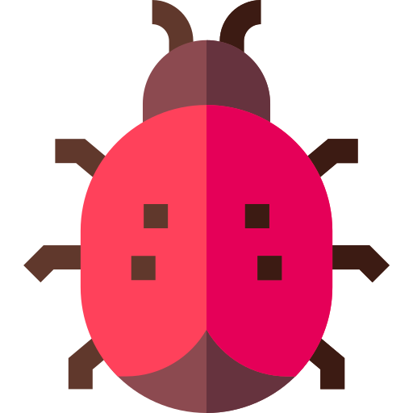
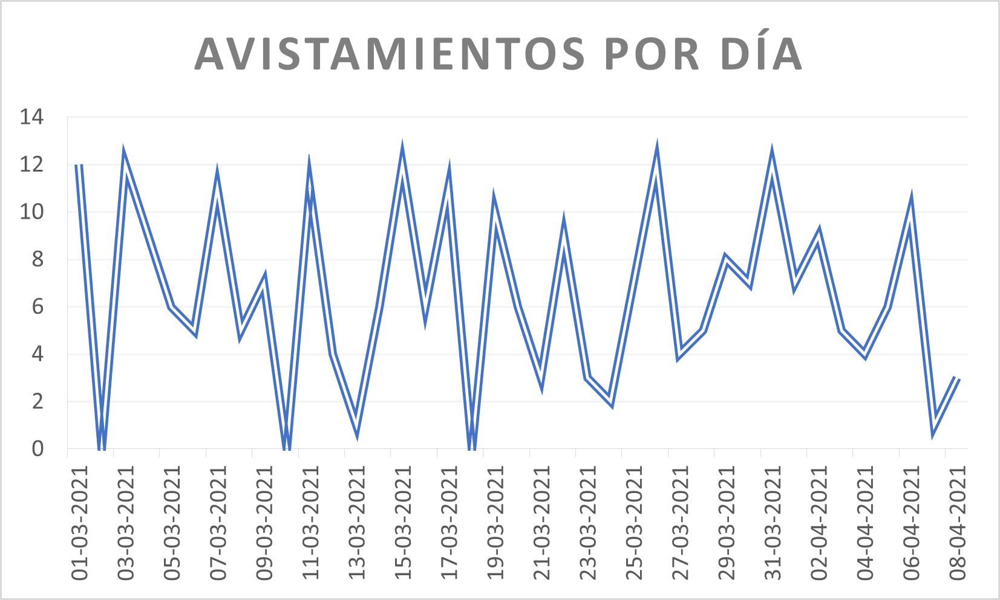
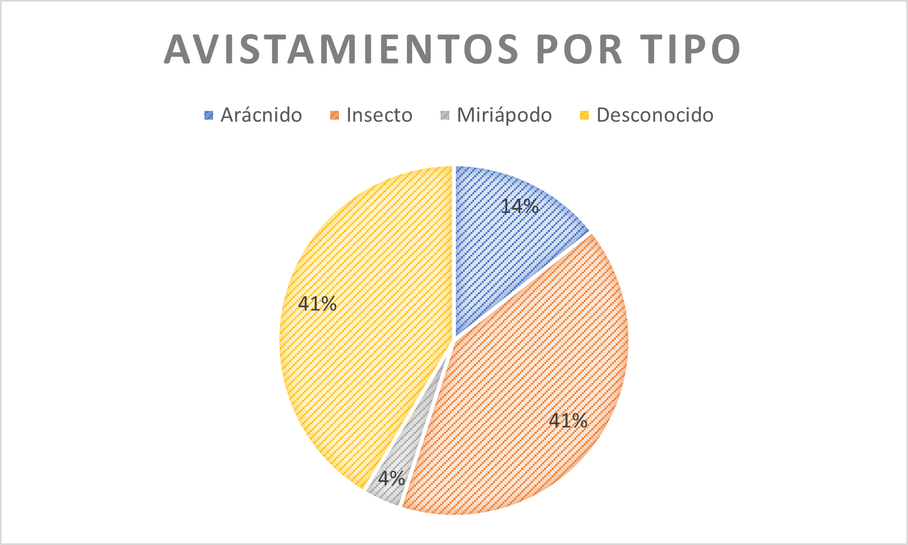
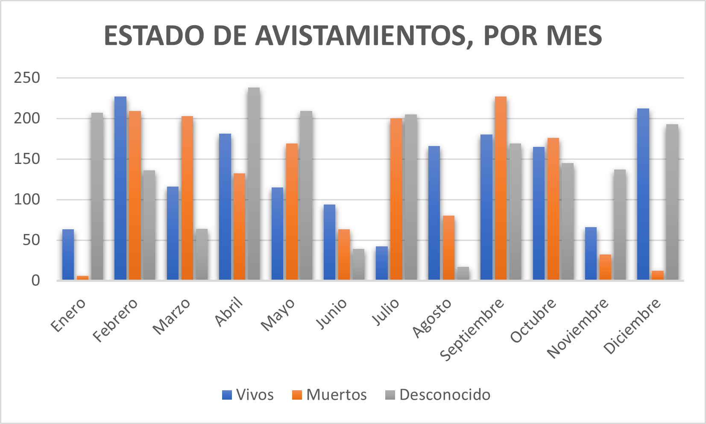

AvistApp
¡Bienvenido al sistema de avistamientos más buena onda de Chile!
Informar avistamiento
Ver listado de avistamientos
Estadísticas
Gráfico 1. Avistamientos por día

Gráfico 2. Avistamientos por tipo

Gráfico 3. Estado de los avistamientos, por mes

Regresar al inicio